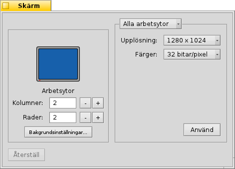

Skärm
Skärm
| Deskbar: | ||
| Location: | /boot/system/preferences/Screen | |
| Settings: | ~/config/settings/system/app_server/workspaces ~/config/settings/kernel/drivers/vesa - Endast vid VESA-läge. ~/config/settings/Screen_data - Lagrar panelens fönsterposition. |
Each of your workspaces can have its own resolution, color depth and refresh rate.
The top menu specifies if your changes are applied only to the current or to all workspaces. Depending on your graphics card, the other menus contain all supported resolution, color depth and refresh rate settings.
Genom att klicka på ändras grafikläget och en avisering frågar om du vill behålla ändringarna. Om du inte svarar på frågan kommer grafikläget efter 12 sekunder att återställas till föregående läge. Det är användbart I fall du inte kunde se aviseringen på grund av att din monitor inte klarade av de nya inställningarna.
There's a key combination that always works, not only when the Screen preferences are open: SHIFT CTRL ALT ESC sets a fall-back video safe mode. Handy if your monitor doesn't report its capabilities correctly and your settings result in a distorted or black screen. Here too, an alert pops up and if you do nothing for 12 seconds or press ESC you'll revert back.
Till vänster kan du ange antalet arbetsytor och arrangera dom i rader och kolumner. Du kan också öppna panelen Bakgrunder.
återställer inställningarna till det läget som var innan du startade skärminställningarna.
To the bottom left you can set the number of workspaces and arrange them in columns and rows and open the Backgrounds preferences.